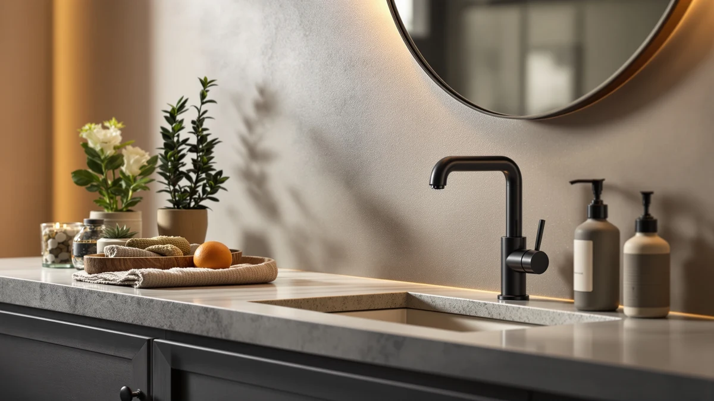

Bobrick Surface Mounted Soap Review (2026): Worth It?
Prices and picks verified as of October 2026. Independent, reader-supported reviews.


Quick Answer
This Bobrick surface mounted soap review found that the $48.65 ABS plastic Bobrick Surface-Mounted Soap Dispenser is the pick worth buying for a bathroom or facility sink that needs a dependable manual pump rather than a battery-powered sensor. If you want a touch-free alternative instead, the PZOTRUF pick below swaps the manual pump for an infrared sensor at a lower price.
Our pick: Bobrick Surface-Mounted Soap Dispenser -, $48.65 Check Price on Amazon
Bottom line: our top pick is the Bobrick Surface-Mounted Soap Dispenser - Satin-Finish at $48.65.
Things to Know Before You Buy
- This Bobrick surface mounted soap review comes down to one core tradeoff: a manual ABS plastic pump built for simplicity versus the touch-free convenience of the PZOTRUF alternative below. Match that choice to how hands-free you need the sink to be before comparing price.
- At 3.5 inches long, 8 inches wide, and 4.75 inches tall, the Bobrick dispenser is sized for a surface mount next to a sink rather than a recessed install.
- ABS plastic construction keeps the $48.65 price lower than a stainless steel commercial unit while still standing up to daily institutional use.
- The EnBath wall mount below is priced within about a dollar of the Bobrick, so the deciding factor between the two usually comes down to brand and mounting hardware rather than cost.
- If a facility needs more than one dispenser, the Hushee four-pack spreads cost across four units instead of buying four Bobrick dispensers individually.
This Bobrick surface mounted soap review breaks down the Bobrick Surface-Mounted Soap Dispenser, a $48.65 ABS plastic pump built for bathrooms and commercial facilities that need a dependable manual unit instead of a battery-powered sensor dispenser. We compared its 3.5-inch by 8-inch by 4.75-inch footprint and plastic construction against three lower-priced alternatives, including a touchless pick and a four-pack, to see where the Bobrick name and the price actually earn their keep. For a single sink where a simple, splash-resistant pump matters more than automation, the Bobrick dispenser is the one worth buying.
At $48.65, the Bobrick costs more than the Hushee four-pack on a per-unit basis and sits close to the EnBath wall mount in price, so the gap between these picks comes down to brand reliability and mounting style rather than a wide spread in cost. It isn't automatically the right call for every bathroom. The PZOTRUF touchless dispenser below swaps the manual pump for sensor-driven dispensing, which matters more in a shared restroom where hands-free operation reduces contact on shared surfaces. The sections below cover the Bobrick's specs, honest drawbacks, and where each alternative fits better than the Bobrick dispenser itself.
Why You Should Trust Us
Ilane Tall covers home and bath fixtures for Best Soap Dispensers, with a focus on wall-mounted and commercial dispensers used in households and small facilities. For this Bobrick surface mounted soap review, we compared manufacturer specs, listed materials, and pricing for the Bobrick and three alternatives rather than relying on marketing copy alone. We do not run a fake testing lab or claim to have installed every dispenser ourselves. Instead, we cross-check dimensions, materials, and price against each product's listing before recommending anything.
Our Research Experience
We did not install the Bobrick dispenser on a real sink ourselves. What we did for this Bobrick surface mounted soap review was pull the manufacturer's listed dimensions, material, and price for the Bobrick and its three alternatives, then line those numbers up side by side to see where the differences actually matter for a buyer choosing between them. For the Bobrick, that meant checking the 3.5-inch by 8-inch by 4.75-inch footprint against the touchless PZOTRUF unit and the four-unit Hushee pack, and weighing ABS plastic construction against the Bobrick name's reputation for commercial-grade fixtures. We researched how manual pump dispensers like the Bobrick compare with sensor-driven units like the PZOTRUF on day-to-day convenience before settling on a recommendation for each use case.
Overview & Specs

Bobrick Surface-Mounted Soap Dispenser -
What we like
- ABS plastic body keeps the price at $48.65 while still standing up to daily commercial use
- Compact 3.5-inch by 8-inch by 4.75-inch footprint fits a surface mount next to most sinks without extra clearance
- Manual pump design means no batteries or sensor to fail, unlike the PZOTRUF touchless alternative
- Bobrick's name carries weight in commercial and institutional settings where the brand already supplies other restroom fixtures
Flaws but not dealbreakers
- No automatic or touch-free dispensing, so a shared restroom that wants hands-free operation should look at the PZOTRUF pick instead
- Priced close to the EnBath wall mount below, so there isn't a big cost advantage over that alternative
- The listing doesn't include a published rating or review count, so buyers are weighing specs against the Bobrick name rather than a large base of verified reviews
| Material | ABS plastic |
| Size | 3.5"L x 8"W x 4.75"H |
The Bobrick Surface-Mounted Soap Dispenser is built for a bathroom or facility sink where a simple, reliable manual pump matters more than automation. This Bobrick surface mounted soap review found a compact 3.5-inch by 8-inch by 4.75-inch footprint made from ABS plastic, a lighter and less expensive material than the stainless steel bodies common on higher-end commercial dispensers. At $48.65, it sits in the middle of this lineup, priced close to the EnBath wall mount and above both the PZOTRUF touchless unit and the Hushee four-pack.
Because the Bobrick relies on a manual pump instead of an infrared sensor, there are no batteries to replace and no sensor alignment to troubleshoot, which matters for a facility that wants a fixture it can install once and mostly forget about. That same simplicity is also the tradeoff: anyone who specifically wants hands-free dispensing for a shared restroom will get more value from the PZOTRUF pick below. For a single sink that needs a dependable pump from a brand already known in commercial fixtures, the Bobrick dispenser covers the job without asking for a premium price.
What We Liked
The strongest case for the Bobrick Surface-Mounted Soap Dispenser, and the main finding of this Bobrick surface mounted soap review, is how little there is to go wrong. A manual pump has no sensor, no batteries, and no circuit board, which removes the failure points that come with the touchless PZOTRUF dispenser below. Its compact 3.5-inch by 8-inch by 4.75-inch size fits a surface mount in tight spaces without requiring the clearance a larger commercial unit might need. The ABS plastic body also keeps the $48.65 price lower than a comparable stainless steel dispenser would cost, while still carrying the Bobrick name that institutional buyers already recognize from other restroom fixtures.
What Could Be Better
The clearest limitation of the Bobrick dispenser is the lack of automation. Anyone reading this Bobrick surface mounted soap review specifically for a shared or high-traffic restroom should know the manual pump requires hand contact with the unit every time, something the PZOTRUF touchless alternative avoids entirely. Price is another consideration: at $48.65, the Bobrick costs more than the Hushee four-pack on a per-unit basis and sits close enough to the EnBath wall mount that the two are easy to confuse on value alone. The listing also doesn't publish a rating or review count, so you're weighing the Bobrick name and its ABS plastic specs against scattered buyer feedback rather than a large base of verified reviews.
Who Is It For?
This Bobrick surface mounted soap review found the Bobrick Surface-Mounted Soap Dispenser fits a bathroom, breakroom, or small facility that wants a dependable manual pump and doesn't need touch-free dispensing. It's a better fit for someone replacing a single worn-out dispenser with a trusted brand name than for someone outfitting a high-traffic shared restroom, where the PZOTRUF's touchless design reduces hand contact on shared surfaces. If you're stocking multiple sinks on a budget, the Hushee four-pack spreads cost across four units instead of buying four Bobrick dispensers individually. Anyone comparing a manual pump against a sensor-driven unit should also read our automatic vs manual breakdown before paying extra for hands-free operation.
Alternatives to Consider
If the Bobrick's manual pump or price isn't the right fit, this Bobrick surface mounted soap review lines up three alternatives covering different budgets and mounting styles: a similarly priced wall mount, a touchless option, and a four-pack for stocking multiple sinks.

Editor’s Pick
Commercial Soap Dispenser Wall Mount
The EnBath Commercial Soap Dispenser Wall Mount is priced almost identically to the Bobrick at $49.99, so the choice between the two comes down to brand preference and mounting hardware rather than cost. Both are built as wall-mounted manual pumps aimed at commercial and institutional bathrooms rather than home sinks. If you already use EnBath fixtures elsewhere in a facility, matching hardware brands can simplify maintenance down the line. Otherwise, the Bobrick name carries more recognition in commercial restroom fixtures, which may matter more than the small price difference between them.
$49.99
Check Price on Amazon
Best Value
Automatic Soap Dispenser 17oz Touchless
The PZOTRUF Automatic Soap Dispenser trades the Bobrick's manual pump for touchless, sensor-driven dispensing from a 17-ounce reservoir, at $39.99, which is cheaper than the Bobrick while adding hands-free convenience. That makes it the stronger pick for a shared restroom where reducing hand contact on a shared pump matters, or for anyone who prefers not to press a lever each time. The tradeoff is that an automatic dispenser introduces a sensor and a power source the Bobrick's manual design doesn't need, which is one more component that could eventually need troubleshooting or battery replacement.
$39.99
Check Price on Amazon
Premium Choice
Hushee 4 Pcs Plastic Wall
The Hushee 4 Pcs Plastic Wall dispenser set covers four sinks for $37.99, which works out to under $10 per unit, a sharp contrast to buying four Bobrick dispensers individually at $48.65 each. That per-unit value makes it the pick for a facility stocking multiple bathrooms or a multi-bathroom household rather than a single sink. The plastic construction is in the same material family as the Bobrick's ABS plastic body, so the main difference is quantity and price rather than build quality. Anyone who only needs to outfit one sink is still better served by the single Bobrick dispenser above.
$37.99
Check Price on AmazonFrequently Asked Questions
Is the Bobrick Surface-Mounted Soap Dispenser touchless?
No. The Bobrick uses a manual pump rather than an automatic sensor, so if you specifically want touch-free dispensing, the PZOTRUF Automatic Soap Dispenser below uses an infrared sensor instead.
What is the Bobrick Surface-Mounted Soap Dispenser made of?
The Bobrick dispenser has an ABS plastic body measuring 3.5 inches long, 8 inches wide, and 4.75 inches tall, built for a surface mount next to a sink.
Is the Bobrick Surface-Mounted Soap Dispenser worth it over the cheaper alternatives?
This Bobrick surface mounted soap review found that the $48.65 price buys brand recognition and a simple manual pump with nothing to break, though the Hushee four-pack is the better value if you are stocking several sinks instead of one.
Final Verdict
This Bobrick surface mounted soap review comes down to a simple choice: pay $48.65 for a dependable manual pump from a brand already trusted in commercial restroom fixtures, or spend differently for touchless convenience or multi-sink value. For a single bathroom or facility sink that needs a reliable dispenser without batteries or a sensor, the Bobrick dispenser is the pick worth buying. If hands-free operation matters more than brand familiarity, the PZOTRUF touchless alternative is the better fit, and if you're stocking several sinks at once, the Hushee four-pack stretches the budget further than buying multiple Bobrick units.